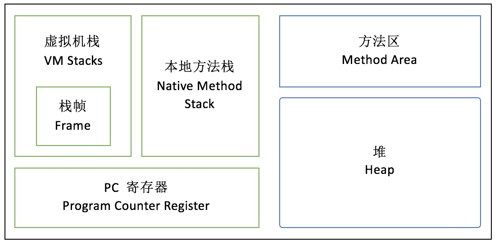
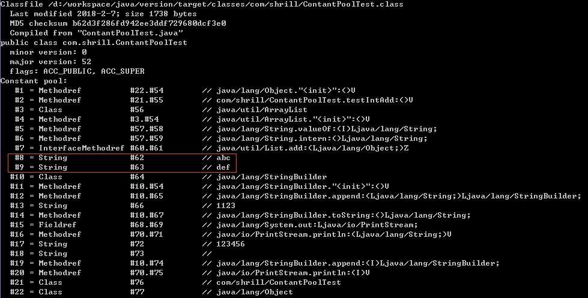

JAVA字符串常量池
JAVA字符串常量池
关于Java字符串常量池的话题很多，先从JVM内存模型说起。
JVM 内存模型
根据 JVM 规范，JVM 内存共分为虚拟机栈、本地方法栈、堆、方法区、程序计数器五个部分。

虚拟机栈
Java虚拟机栈是Java方法执行的内存模型，每一个方法从调用直至执行完成的过程，就对应着一个栈帧在虚拟机栈中入栈到出栈的过程。栈帧(Stack Frame)存储局部变量表，操作数栈，动态链接，方法出口等信息。会抛出StackOverflowError和OOM异常。
本地方法栈
jvm调用操作系统方法所使用的栈。本地方法栈和虚拟机栈非常相似，不同的是虚拟机栈服务的是Java方法，而本地方法栈服务的是Native方法。HotSpot虚拟机直接把本地方法栈和虚拟机栈合二为一。会抛出StackOverflowError和OOM异常。
堆
简单的来讲，堆内存用于存放由new创建的对象和数组，在堆中分配的内存，由java虚拟机自动垃圾回收器来管理。
方法区
方法区主要存储了class的一些信息，包括运行时常量池、Classloader的引用，字段数据，方法数据等。永久代（permanent generation）只是HotSpot VM曾经用来实现方法区的一个空间；在JDK8的HotSpot VM它被元数据区（Metaspace）代替。HotSpot中也称为永久代（Permanent Generation），（存储的是除了Java应用程序创建的对象之外，HotSpot虚拟机创建和使用的对象）。方法区在不同虚拟机中有不同的实现。
jdk7把字符串常量池移到了堆中。
jdk1.8中则把永久代给完全删除了，取而代之的是 MetaSpace。
程序计数器
jvm执行程序的流水线，存放一些跳转指令。
什么是JAVA字符串常量池
Java中的常量池，实际上分为两种形态：静态常量池和运行时常量池。
静态常量池，即*.class文件中的常量池，class文件中的常量池不仅仅包含字符串(数字)字面量，还包含类、方法的信息，占用class文件绝大部分空间。
静态常量池存储在方法区，如下图：
运行时常量池，则是jvm虚拟机在完成类装载操作后，将class文件中的常量池载入到内存中，并保存在方法区中，我们常说的常量池，就是指方法区中的运行时常量池。
运行时常量池（runtime constant pool）其中的引用类型常量（例如CONSTANT_String、CONSTANT_Class、CONSTANT_MethodHandle、CONSTANT_MethodType之类）都存的是引用，实际的对象还是存在Java heap上的。
HotSpot VM的StringTable的本体在native memory里。它持有String对象的引用而不是String对象的本体。被引用的String还是在Java heap里。一直到JDK6，这些被intern的String在permgen里，JDK7开始改为放在普通Java heap里。
运行时常量池，由于运行时常量池在方法区中，我们可以通过jvm参数：-XX:PermSize、-XX:MaxPermSize来设置方法区大小，从而间接限制常量池大小。
1
2
3
4
5
6
7//保持引用，防止自动垃圾回收
List<String> l = new ArrayList<>();
int i = 0;
while(true){
//通过intern方法向常量池中手动添加常量
l.add(String.valueOf(i++).intern());
}程序立刻会抛出：Exception in thread “main” java.lang.outOfMemoryError: PermGen space异常。PermGen space正是方法区，足以说明常量池在方法区中。
JDK8 移除了方法区，转而用Metaspace区域替代,使用新的jvm参数：-XX:MaxMetaspaceSize=8M,运行上面的代码，程序没有抛出异常，但是会触发“Metadata GC Threshold”，说明运行时常量池是划分在Metaspace区域中